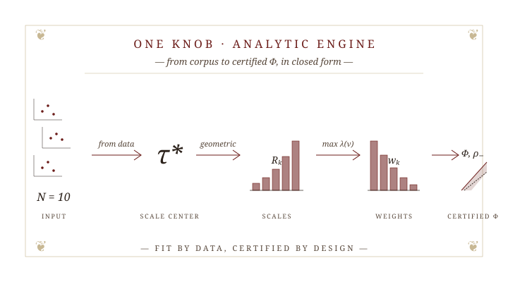
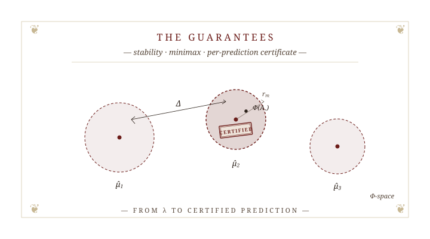
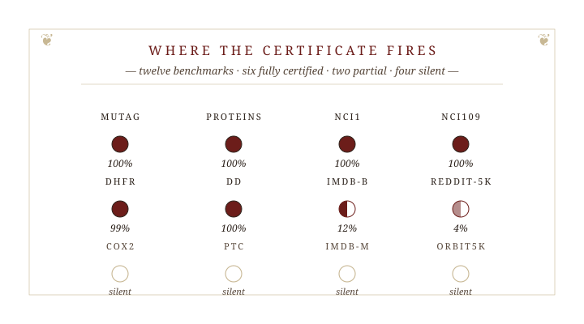

PLACE
Persistence-Landmark Analytic Classification Engine
20 May 2026
The Plan of the Talk
| § | Article |
|---|---|
| I. | Motivation — stability · discriminability; the band that closes the gap. |
| II. | Construction — one knob N; an analytic engine; a certified \Phi. |
| III. | Theory — \lambda \to \Delta; tight margin & minimax; the NC certificate. |
| IV. | Experiments — twelve benchmarks; where the certificate fires; silent ≠ wrong. |
| V. | The wider arc — PALACE, CASTLE, open questions. |
§ I. Motivation
Or, from point clouds to certified classifiers — via topology.

An honest feature map lives in the band — bounded above (stability) and below (discriminability).
Classifying point clouds and graphs
Given a labeled corpus of point clouds or graphs, learn a rule that predicts the label of a new instance.

ORBIT5K
‹5 000› synthetic point clouds; five classes from orbit dynamics on the torus. Canonical TDA point-cloud benchmark.

MUTAG
‹188› molecular graphs; mutagenic vs. non-mutagenic. Small, binary, clean.

NCI1
‹4 110› chemical compounds; active vs. inactive in a cancer-cell-line screen. Medium, binary, harder.
Every classical recipe begins the same way: turn each instance into a vector. The art is in how.
What does a good feature map need?
For a point cloud or a graph, four properties decide whether \Phi is a feature map worth the name:
- Invariance. \Phi(X) = \Phi(g \cdot X) for every symmetry g (vertex relabeling; rotation / translation).
- Stability. \|\Phi(X) - \Phi(X')\| \leq L \, d(X, X') — close inputs ⇒ close outputs.
- Discriminability. \|\Phi(X) - \Phi(X')\| \geq \ell \, d(X, X') — distant inputs ⇒ distant outputs.
- Sample-efficient. Informative without 10^5 examples; ML / GNNs over-fit in our regime.
Topology meets all four. The bill comes later. To follow →
Topology as the descriptor
Persistence diagrams: the multi-scale shape summary — isometry-invariant, GH-Lipschitz, dimension-aware.
- The space. (\mathcal{D}, d_\mathcal{B}) isn’t Hilbertian — and ML wants vectors.
- The question. What map \Phi \colon (\mathcal{D}, d_\mathcal{B}) \to \mathbb{R}^\ell is good enough for classification?
PDs answer the call — but they live in the wrong space. ☞Embed
Existing embeddings — and what they miss
Embeddings of (\mathcal{D}, d_\mathcal{B}) abound — all bound distortion from one side only.
KERNELS
sliced-Wasserstein · persistence-Fisher · WKPI
Implicit RKHS map; Lipschitz in d_\mathcal{B}; no closed-form margin.
after Reininghaus ’15 · Kusano ’16 · Carrière ’17 · Le-Yamada ’18 · Zhao-Wang ’19
VECTORISATIONS
persistence images · landscapes
Explicit map; Lipschitz; hyper-parameters tuned on held-out data.
after Bubenik ’15 · Adams ’17
NEURAL-ON-PD
PersLay · Set Transformer
Strong empirically; opaque; bounds at best post-hoc.
after Hofer ’17 · Lee ’19 · Carrière ’20 · Zhao-Wang ’20
Stability without discriminability is a kind, lying microscope. ☞Bound from below
Coarse embedding into Hilbert space
An honest embedding — bounded from both sides.
\Phi \colon (X, d) \to \mathcal{H} is a coarse embedding if there exist non-decreasing \rho_-, \rho_+ \colon [0, \infty) \to [0, \infty] with \rho_-(t) \to \infty, such that
\rho_-\bigl(d(x, y)\bigr) \;\leq\; \bigl\| \Phi(x) - \Phi(y) \bigr\|_\mathcal{H} \;\leq\; \rho_+\bigl(d(x, y)\bigr).
Mitra–Virk — existence in ’21 (via asymdim); explicit in ’24. ☞Landmark coordinates
§ II. Construction
One knob (N), an analytic engine, a certified \Phi.

From corpus to certified \Phi — \tau^*, R_k and w_k all flow from the data; only N is ours to set.
Construction at one scale
At scale R: a grid \mathbb{G}_R^+, a hat \varphi_{R,p}, summed over the diagram.
LANDMARK BASIS
COVER
COORDINATES \textcolor{#6c1d1a}{\varphi_{R,p}}
\textcolor{#6c1d1a}{\Phi_R(A) = \bigl(\sum_a \varphi_{R,p}(a)\bigr)_p}
- Coarse R: bound only fires for d_\mathcal{B} \geq 3R — close pairs entirely missed.
- Fine R (under \nu-coherence): \|\Phi_R(A) - \Phi_R(B)\|_{\ell^2} \geq \tfrac{R\sqrt{2}}{8} — vanishes with R.
- The fix: fine for close pairs, coarse for far. ☞Stack them
Construction at many scales
Stack scales R_1 < \cdots < R_N with weights w_k chosen analytically to maximize \lambda.
STACK
EMBEDDING
CERTIFICATE
For d_\mathcal{B}(A, B) \geq R_1 under ν-coherence (Eq. 14): \rho_-(t;\nu) \;=\; \lambda(\nu)\,(t - R_1), \qquad \lambda(\nu) \;=\; \tfrac{1}{48} \min\!\left\{ \min_{2 \leq i \leq N} \tfrac{\sqrt{\sum_{k=1}^{i-1} w_k^2 R_k^2}}{R_i - R_1},\; \tfrac{\sqrt{\sum_{k=1}^{N} w_k^2 R_k^2}}{L - R_1} \right\}.
The engine
One knob — N (default 10). Everything else from the data.
- N — model complexity, default 10. Robust: accuracy varies <2.5\% across N \in \{5, 10, 15, 20\} (Paper I, Tab. N-sweep).
- \tau^* — adaptive scale center from the corpus: median half-persistence (proxy) or class-aware crossing.
- R_1 < \cdots < R_N — geometric progression around \tau^*.
- w_k — closed-form, unique maximizer of \lambda(\nu) (Lemma II.4). ☞Onto theory
§ III. Theory
Guarantees no other diagram-based classifier can give.

The classifier we will certify: nearest-centroid on \Phi-coordinates. A test diagram inside a ball gets a proven label.
The class margin Δ
A labeled corpus \{(A_i, y_i)\}, y_i \in \{1,\ldots,k\}. Each class c has a population mean \bar A_c \in (\mathcal{D}^n, d_\mathcal{B}) with image \hat\mu_c = \Phi(\bar A_c). Classification rides on one quantity: \Delta = \min_{c \neq c'} \|\hat\mu_c - \hat\mu_{c'}\|_2 — the class margin in Φ-space.
For class means at bottleneck distance \delta_{\text{class}} = d_\mathcal{B}(\bar A_c, \bar A_{c'}) \geq R_1 (under \nu-coherence): \Delta \;\geq\; \lambda(\nu)\,(\delta_{\text{class}} - R_1) \;-\; 2 \max_c D_c. The bottleneck slope \lambda passes through into \Delta — the only PD construction that gives a closed-form lower bound on the class margin.
Picking the descriptor
Different filtration descriptors give different diagrams — and different accuracies (5–15 pp swings across 12 benchmarks). Zhao–Wang (WKPI, ’19) flagged this as a key open problem: which descriptor to use, in closed form.
For each candidate descriptor f in a pool, compute once (no classifier training): \hat f^\star \;=\; \arg\max_{f}\; \hat\rho_{\mathrm{Mah}}(f) \quad\text{(Mahalanobis, heterogeneous pools)}; \quad \hat\Delta(f) / \sqrt{\ell(f)} \quad\text{(isotropic surrogate, homogeneous pools)}.
- Mahalanobis margin \hat\rho_{\mathrm{Mah}} (LDA Bayes-margin form, Ledoit–Wolf-shrunk Σ) — empirically strongest closed-form ranker on a heterogeneous 64-descriptor chemical-graph pool.
- Isotropic surrogate \hat\Delta/\sqrt{\ell} admits a closed-form selection-consistency rate on homogeneous (14–15 descriptor) pools.
- No held-out validation, no CV. The first closed-form answer to Zhao–Wang’s open problem.
Excess risk & minimax — tight
The margin bound and its sample-starved lower bound match.
\mathbb{E}\bigl[\mathrm{err}(\hat g)\bigr] \;-\; \mathrm{err}(g^\star) \;\leq\; O\!\left(\frac{k\,R}{\Delta\,\sqrt{m_{\min}}}\right). k classes; R embedding radius; m_{\min} smallest per-class sample size.
For m_{\min} \lesssim R/\Delta, no classifier achieves better than constant excess risk on the worst-case PLACE-distribution family.
::: {.dispatches .fragment data-fragment-index=“3” data-title=“What”tight” means” style=“font-size: 0.82em; padding: 0.7rem 1.3rem 0.55rem; margin: 1.5rem auto 0.4rem;”} - The \Delta in the upper bound and the \Delta in the lower bound are the same quantity. - For m \gtrsim R/\Delta, the rate 1/\sqrt{m} kicks in — Δ is the only knob that lowers the sample need. - No PD vectorization with only an upper distortion bound can prove an analogous minimax claim — Δ requires \lambda. :::
The nearest-centroid certificate
Per-input guarantee — fires when the test point lies inside the margin ball.
\bigl\| \Phi(A_\star) - \hat\mu_c \bigr\|_2 \;<\; r_m \quad\Longrightarrow\quad \text{NC classifier returns class } c, \text{ provably correct.} The radius r_m comes from a closed-form Pinelis–Bernstein concentration; no held-out calibration.
- Fires when r_m < \Delta/2 — sharpness condition.
- r_m from Pinelis–Bernstein concentration — closed-form, no held-out calibration.
- Empirical: 940 / 940 MUTAG test predictions agree with the population NC rule (Paper I, §IV).
PLACE-only territory
Of the diagram-based classifiers, only PLACE delivers all five closed-form guarantees.
| PD-classifier family | closed-form w_k | \Delta \!\ge\! \lambda\,\delta bound | excess risk + minimax tight | per-input certificate | descriptor selection (closed-form) |
|---|---|---|---|---|---|
| Persistence images, landscapes | ✗ | ✗ | ✗ | ✗ | ✗ |
| Kernels — sliced-Wasserstein · P-Fisher · PWGK | ✗ | ✗ | ✗ | ✗ | ✗ |
| Learned-weight kernels — WKPI | learned | ✗ | ✗ | ✗ | ✗ (open, Zhao–Wang ’19) |
| Neural-on-PD — Hofer · PersLay · PEGN | learned | ✗ | ✗ | ✗ | ✗ |
| PLACE | ✓ | ✓ | ✓ | ✓ | ✓ |
The gap from \lambda — passed through \Delta — opens the door to all five guarantees. ☞Experiments
§ IV. Experiments
Twelve benchmarks — where the certificate fires, where it stays silent.

Variance-aware Pinelis–Bernstein firing rate per dataset (Paper I, Tab. cert_firing). Six chemical benchmarks fully certified; two partial; four silent.
Headline accuracy
PLACE leads diagram-based methods on Orbit5k; matches the strongest topology baseline on MUTAG within statistical noise — using no learned weights.
| Dataset | PLACE (lin-SVM) | PersLay | WKPI-kC | Persformer | GIN |
|---|---|---|---|---|---|
| Orbit5k (α-H_1) | 87.2 {\pm 0.6} | 87.7 {\pm 1.0} | — | 91.2 {\pm 0.8} | — |
| MUTAG | 88.4 {\pm 7.9} | 89.8 | 88.3 | — | 90.0 |
| PROTEINS | 71.5 {\pm 4.3} | 74.8 | 75.2 | — | 76.2 |
| NCI1 | 71.3 {\pm 1.9} | 73.5 | 84.5 | — | 82.7 |
| DD | 76.3 {\pm 3.4} | — | 80.3 | — | — |
PLACE leads diagram-based on Orbit5k; trails learned-weight methods where labels carry the signal — by design. ☞What we picked
What we picked — the closed-form selector at work
The closed-form rule from §III ranks descriptors once, no training. Here is what it chose — and how well the ranking tracks test accuracy.
| Dataset | pool size | rule | descriptor picked | test acc. |
|---|---|---|---|---|
| Orbit5k | 4 | \hat\Delta/\sqrt{\ell} | alpha-H_1 | 87.2 |
| MUTAG | 64 | \hat\rho_{\mathrm{Mah}} | deg + HKS_{10} (joint) | 88.4 |
| PROTEINS | 64 | \hat\rho_{\mathrm{Mah}} | HKS_{10} | 71.5 |
| NCI1 | 64 | \hat\rho_{\mathrm{Mah}} | HKS_{10} | 71.3 |
| DD | 14 | \hat\Delta/\sqrt{\ell} | HKS_{0.1} | 76.3 |
- Spearman \rho \approx +0.54 between \hat\rho_{\mathrm{Mah}} rank and test-accuracy rank, averaged across 10 chemical benchmarks.
- Positive on 9 of 10 chemical datasets (PTC the lone outlier — \rho_- \approx -0.08).
- Closes the open problem posed by Zhao–Wang (WKPI, ’19) — the first closed-form descriptor selector with empirical validation. ☞Fires
Where the certificate fires
Eight of twelve benchmarks satisfy the firing condition r_m^{\mathrm{vP}} < \tfrac{1}{2}\hat\Delta_c — a property of the data, decided at training time, no held-out calibration.
| Dataset | m_{\min} | r_m^{\,\mathrm{vP}} | \hat\Delta/2 | fire % |
|---|---|---|---|---|
| MUTAG | 57 | 0.35 | 0.78 | 100 % |
| PROTEINS | 405 | 0.31 | 0.91 | 100 % |
| NCI1 | 1,848 | 0.011 | 0.047 | 100 % |
| NCI109 | 1,843 | 0.011 | 0.046 | 100 % |
| DD | 438 | 1.29 | 4.10 | 100 % |
| DHFR | 265 | 0.038 | 0.047 | 99 % |
| IMDB-B | 450 | 0.79 | 0.41 | 12 % |
| REDDIT-5K | 899 | 0.075 | 0.059 | 4 % |
On MUTAG, the empirical NC predictions agree with the population NC rule on every one of 940 / 940 held-out tests (Clopper–Pearson 95% lower bound \geq 0.984). ☞The silent four
Where it stays silent
Four datasets sit in a structurally distinct regime: \|\Sigma_c\|_{\mathrm{op}} / \hat\Delta_c^2 \in [3,\,90] — population SNR too low for any sample-mean concentration argument.
- COX2, PTC, IMDB-M, Orbit5k — linearly separable (linear-SVM accuracy \geq 70\%) but not nearest-centroid separable.
- The certificate’s silence is a structural diagnostic: any Pinelis / Pinelis–Bernstein / Gaussian / Hanson–Wright bound would need m_c \geq c\,\|\Sigma_c\|_\mathrm{op}\log(k/\alpha)/\hat\Delta_c^2 samples — exceeds m_{\min} by orders of magnitude.
- Silent ≠ wrong: linear-SVM accuracies stay competitive; the certificate is correctly abstaining.
Silent ≠ wrong: PLACE knows when it does not know. ☞Wider arc
§ V. The Wider Arc — Akriti
One scaffold · three modules — predict, learn, decide — shipped as one library.

PLACE → PALACE → CASTLE · Akriti
The Mitra–Virk landmark scaffold extends without contradiction — three modules ship as one open-source library: Akriti (ākṛti, आकृति — “the configurational form by which an instance is recognized as a member of its class”).
- PALACE — learned filtration, differentiable end-to-end; recovers PLACE in the fixed-filtration limit. Paper II, in submission.
- CASTLE — two-sample tests and topological power calculations on \Phi — predict → decide. Forthcoming.
- Apache-2.0 · PyTorch + PyG-native · CPU / CUDA / MPS · per-prediction certificates first-class — the first TDA library to ship them.
- akriti.io · github.com/akritihq — public beta forthcoming; NRL as first US-lab user.
- Open threads: edge-weighted graphs · streaming centers · beyond H_0 + H_1.
Thank you
With thanks to Pramita Bagchi, Atish Mitra, Žiga Virk. ICERM TW-26-FCG · Brown University · 20 May 2026.
PLACE · S. Majhi · ICERM TW-26-FCG · Brown University · 20 May 2026